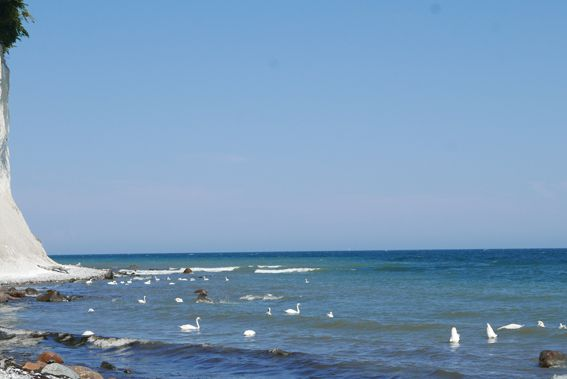

WRRL in MV

„Wasser ist das flüssige Gold unserer Erde, ohne Wasser wäre kein Leben möglich. Der Schutz unserer Gewässer setzt eine nachhaltige Bewirtschaftung voraus. Dabei müssen verschiedene und zum Teil konträre Nutzungen gegeneinander abgewogen werden, was nicht immer konfliktfrei ist." Backhaus und Bürger im Dialog über Gewässer
Die Wasserrahmenrichtlinie steckt der mecklenburg-vorpommerschen Wasserwirtschaftsverwaltung ein ehrgeiziges Ziel:
Bis 2015, spätestens bis 2027 sollen sich die Gewässer Mecklenburg-Vorpommerns in einem Zustand befinden, der nur gering von einem natürlichen Zustand abweicht.Die Wasserrahmenrichtlinie fordert für alle europäischen Gewässer einen Zustand hoher Wasserqualität und Strukturvielfalt, der genug Lebensraum für Pflanzen und Tiere bietet. Die letzte Bestandsaufnahme habe gezeigt, dass ca. 97 % der berichtspflichtigen Fließgewässer (ca. 8.000 km) dieses Ziel verfehlen.
Bei den Küstengewässern erfüllt bislang keines alle Vorgaben der WRRL.
Die Zuflüsse sind einfach zu dreckig. Auch Gülle sucht sich den Weg des geringsten Widerstands.
